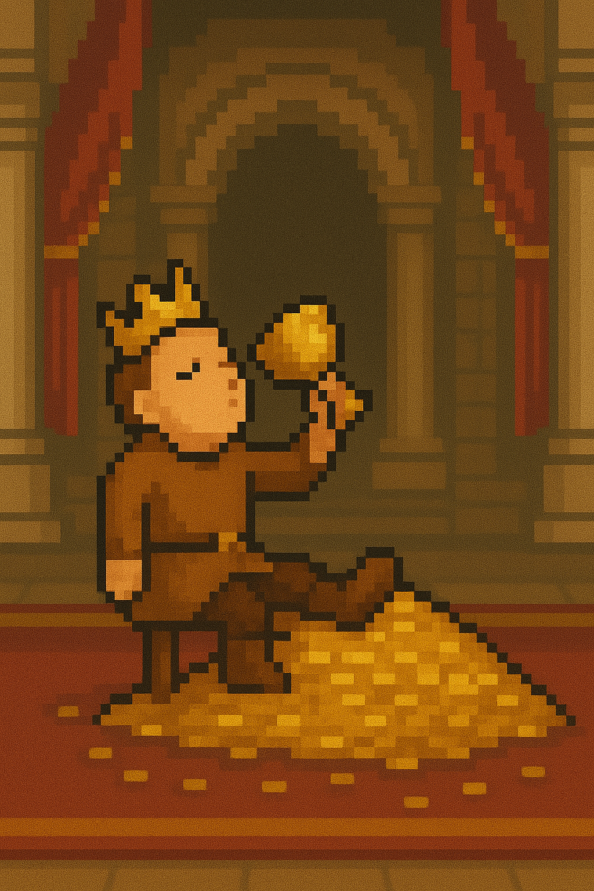

You ask the king for riches and buy a palace on a hill
overlooking you're old village. Part of you feels pity for them,
that used to be you're life... but you've never tasted wines so
sweet, cheeses so sharp, bread so filling. You're curtains are fine
silk, and every morning is a pleasure. Now that you're a
noble, you have real power to change things for you're village. You
could invest in them, bring in resources and rebuild their economy.
But helping them could make you broke, there's not enough to help
you're village and sustain you're lavish lifestyle. You'd be a
peasant again! Back where you started...
What will it be?
Save your village
Keep living the sweet life